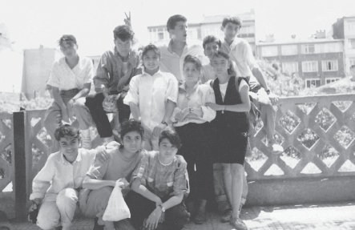

İşte bu ve buna benzer bir sürü, inci sözler yazılır,
“Sev seni seveni seven de sevsin seni sen sevmezsen seni seveni seni seven de sevmez seni,”
Sürekli tekrarlanan harfli kelimeler yapılırdı.
Bütün bunların haricinde, yine sınıfın zıpırlarından biri bu günlüklerden birini alır, ona şerh düşerdi. Misal;
“Dur trenci bineyim
On liram var vereyim
Çok sevdiğim ......’i
Bir kez olsun göreyim.”
Biri yukarıdaki gibi şiir, mani gibi bir şey mi yazdı? Bizimki de altına şu satırları karalardı.
“Yağdı yağmur, çaktı şimşek. Sende mi şair oldun? Eşşolueşşek.”
Ya da biri “Sen benim en iyi arkadaşımsın, sırdaşımsın...” falan diye bir şey yazmışsa, hemen:
“Eee!, niye o zaman geçen gün dövüştünüz, küfür ediyordunuz birbirinize,” gibi şeyler ekleyerek, kendince doğruluk, dürüstlük yapar, fakat yaptığı işin bir nevi hırsızlık olduğunu anlamazdı.
Hatıra defterleri ile alakalı son sözlerimi de edeyim. Kendi günlüğümden biliyorum ki; herkes doktor, pilot ya da öğretmen olmak istiyor. Bu biiiir. En sevdiğimiz öğretmen, kendi sınıf öğretmenimiz, Jale Işık. Bu ikiiiii. En sevdiğimiz dans grubu, Tolga Han Dans Grubu. Bu da üüüç. Böyle bir soruya ne gerek var diyorum, ama o zaman ne kadar önemli olduğunu hatırlayınca hemen bu soruyu kendime sormaktan vazgeçiyorum.
Çıkartmalar: İlkokul günlerimizin olmazsa olmazı olan çıkartmaları, başta defter kapları olmak üzere, nerede boşluk görürsek oralara yapıştırırdık.
Önceleri çizgi film kahramanları süslerdi buraları, ancak yaş biraz ilerleyip, bir şeyler öğrenmeye başlayınca yerlerini şarkıcı, futbolcuya da sinema oyuncuları aldı. Sonra da yok olup gittiler. Bunun dışında bir de çıkartma defter ya da kitapları vardı ki, bunlar tamamen ticari gayeyle yapılmış işlerdendi. En çok kullanılanı ise o zamanlar dünya kupalarına katılan takımların olduğuydu.
Bir miktar para geçerse elinize, daha cebinize girmeden hemen okul yakınındaki kırtasiyeciye koşar, bu ürünlerin deste halinde satılanlarından birkaç kutu alır, ondan sonra başlardınız deli gibi bu çıkartmaları yapıştırmaya.
İlginç sayılabilecek bir durumdu bu. Akl-ı selim ile düşündüğünüz vakit, “Ne gerek vardı ki bu çıkartmaları oraya yapıştırmaya, adam gibi albüm yapın, hem bizi kurtarın, hem kendiniz de yorulmayın,” diyebilirdiniz ama bir işe yaramaz.
Çıkartma Yapıştırma: Blue Jean Dergisi’nin başlattığı bir akımdır. Sevdiğimiz ünlülerin resimleri, özlü sözler gibi abidik gubidik şeylerin çıkartmalarını yaparlar, biz de yapıştırmak zorundaymışız gibi, defterlere, kitaplara, dolaplara, cüzdanlara, masalara önümüze neresi gelirse oraya bunları yapıştırırdık.
İşin garip yanı hızımızı alamaz, bunların kenarlarında boşluklar olur beyaz, beyaz şekilsiz şeyler, onları da sağa sola yapıştırırdık yine. Nasıl olsa yapışıyor.
Cüzdana yapıştırılanlar, doğal ortam gereği sıcak ve terle temas halinde olduklarından, yapışkanları bozulur, yapıştırdığınız Samantha Fox resmi, bir süre sonra Benny Hill olurdu.
Okul geleneklerinden bir başkası da okulu kırmaktır. Üniformalar yanınızda getirdiğiniz kıyafetlerle değiştirilir. Sonra yaşınız hangisine uygunsa ona göre plan yapılarak bir yer belirlenir. Bu planlar yapılırken sevilmeyen tiplere zaten haber verilmez. En çok sevdiğiniz ve ağzı sıkı tipler seçilerek, birkaç gün öncesinden hazırlık yapılır. Yer belirlemede öğlenci ya da sabahçı olmak da önemlidir. Sabahçıysanız ilk tercih edilecek yer Galleria’dır.
Buranın açılış saati sabah 10.00 olduğu için açılmadan bir saat önce kapısında beklemeye başlardık. İçeri girdikten sonra saatlerce burada vakit geçirebilirdik. Burası olmadığı vakit sinemaya, eğer yaz günleriyse Yeşilköy, Florya ya da Menekşe tarafına geçip denize giderdik.
